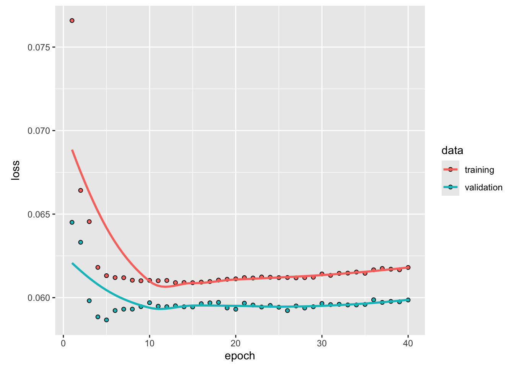
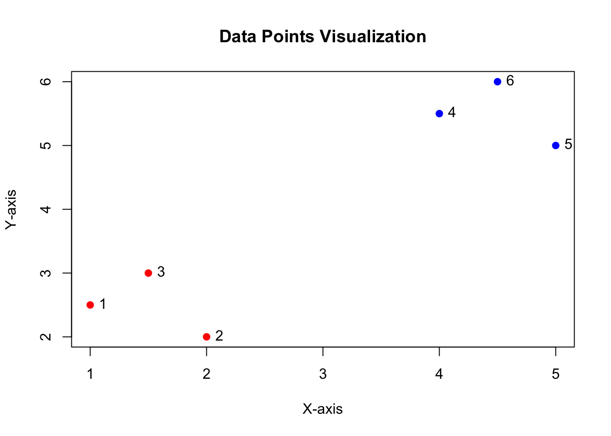
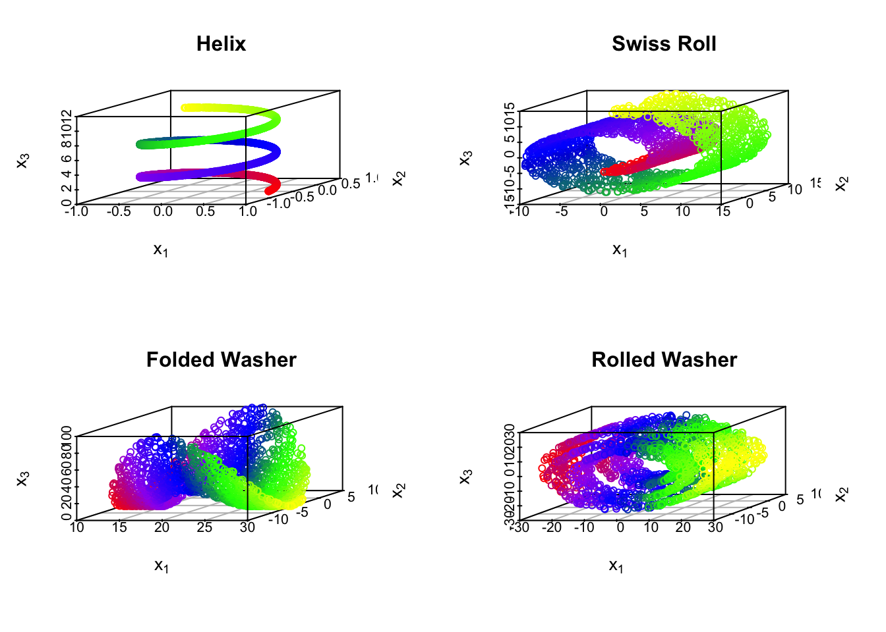

7.2 Hierarchical Clustering
Hierarchical clustering views clustering from an alternative perspective compared to the partitioning viewpoint of center-based methods. Rather than finding an optimal paritioning of data into a pre-specified number of groups, hierarchical methods treat clustering as an iterative process either merging data into larger and larger groups (agglomerative methods) or dividing the full dataset into smaller and smaller clusters (divisive methods). As a result, there are strong connections between the clustering of data into \(k\) vs \(k+1\) groups. In particular, when using hierarchical methods, the optimal clustering of data into \(k\) (\(k+1\)) groups can be obtained by merging (splitting) the optimal clustering of data into \(k+1\) (\(k\)) groups.
7.2.1 Dendrograms
The key output of hierarchical clustering is a dendrogram (tree diagram) depicting the subsequent merges/divisions of data, where each merge/division is shown by a horizontal line, with height indicating dissimilarity between merged or divided clusters. Before discussing the generation of a dendrogram and the many choices on which the process depends, let’s first discuss how a dendrogram can be read and the information it provides for clustering.
In the figure below, samples 8 and 15 are merged into a cluster at height \(\approx 0.5\) indicating they have an original dissimilarity (Euclidean distance in this case) of 0.5. Sample 4 is then merged into the cluster with samples 8 and 15 at height \(\approx\) indicating the dissimilarity of sample 4 with the cluster of samples 8 and 15 is \(\approx 0.75\)

In addition to indicating the subsequent mergings/divisions of our data, the dendrogram can be used to determine a clustering of the data into a chosen number of clusters. For example, to cluster the data into three groups, we draw a horizontal line at a height (four in this case) which only cuts the tree into three branches.

Samples on the same branch are in the same cluster. Thus, the branch cut above suggest the following clustering:
- Cluster 1, samples: 12, 9, 13, 15, 2, 6
- Cluster 2, samples: 4, 5, 7, 8
- Cluster 3, samples: 3, 14, 10, 1, 11which appears to match the clusters shown in the original data quite well.

7.2.2 Building a dendrogram
As suggested above there are two primary methods for building a dendrogram. The first is an aggolomerative approach which begins with \(N\) clusters (one per data point) then iteratively merges clusters based on the minimum dissimilarity until a final cluster containing all data remains. Alternatively, there is a divisive approach which begins with all data points in one cluster and splits iteratively until it finishes with \(N\) clusters (one per data point). Divisive clustering is less common, so we will focus on agglomerative methods hereafter.
Agglomerative clustering proceeds as follows.
- Initialize: Start with
Nclusters, one per data point. - Identify Closest Clusters: Find the pair with the smallest dissimilarity.
- Merge Clusters: Combine the clusters and recalculate distances.
- Repeat until only one cluster remains.
Importantly, the initial dissimilarity or distance is a tuneable choice made by the practitioners. While Euclidean distance is the default, the performance of the hierarchical agglomerative clustering is highly dependent on this choice. Like \(k\)-center and \(k\)-medoids clustering, you can non-Euclidean dissimilarities or distance such as Manhattan distance or cosine (dis)similarity if they would be a better choice depending on the application.
Additionally, we have also have a choice for specifying how the pairwise dissimilarities/distances are used to compute the distance between clusters containing more than one data point. The method for computing dissimilarity/distance between clusters is called linkage and common methods include
- Single Linkage: The distance between cluster \(A\) and cluster \(B\) is the smallest distance between a sample in \(A\) and a sample in \(B\). Using \(C_A\) and \(C_B\) to denote clusters \(A\) and \(B\), the distance between the clusters is \[d(C_A,C_B) = \min_{\vec{x}\in C_A, \vec{y} \in C_B} d(\vec{x},\vec{y}).\]
- Complete Linkage: The largest distance between a sample in \(A\) and a sample in \(B\) is used to define the distance between clusters \(A\) and \(B\). Mathematically, the distance between the clusters is \[d(C_A,C_B) = \max_{\vec{x}\in C_A, \vec{y} \in C_B} d(\vec{x},\vec{y}).\]
- Average Linkage: Average distance between all pairs of points in cluster \(A\) and \(B\) defines the cluster distance. Then, the distance between the clusters is \[d(C_A,C_B) = \frac{1}{|C_A|\,|C_B|}\sum_{\vec{x}\in C_A, \vec{y} \in C_B} d(\vec{x},\vec{y}).\]
- Ward’s Linkage: This method uses an iterative formula based on the squared distances to minimize the within cluster variation at each merge akin to \(k\)-means. When the input to agglomerative clustering is Euclidean distance, Ward’s Linkage is proportional to the squared Euclidean distance between the sample means in each cluster [29] though an explicit formula using the original dissimilarities is often used so that the original data is not required. For a complete discussion on this method and how it fits into the infinite family of Lance-Williams algorithms, see additional references [30, 31].
In the above, the notation \(d(\cdot,\cdot)\) represents the distance or dissimilarity of observations and/or clusters. Both the choice of original distances/dissimiliarities and the type of linkage have a strong impact on the quality of the clustering.
7.2.2.1 Comparing Linkage Methods
The four linkages methods above have different properties with single and complete representing extreme cases and average linkage and Ward linkage somewhere in between. Specifically, single linkage only requires two points to be close for clusters to merge, whereas complete linkage requires all pairs of points to be close. This “friend of my friend is my friend” feature of single linkage can generate clusters which are formed by long chains of singletons merged together at short heights and can in some cases capture manifold structure within a cluster. Conversely, complete linkage favors many small, compact clusters which get merged at larger heights.
Comparing and choosing a linkage method can use the above heuristics as a guide, but for a more data driven approach, Gap statistics or silhouette coefficients are suitable. Unique to hierarchical clustering, we can also use the cophenetic correlation as a quantitative measure of how well a clustering preserves pairwise distances/dissimilarities in the original data.
Definition 7.1 (Cophenetic Correlation Coefficient) For compactness, let \({\bf \Delta}_{ij}\), \(1\le i < j \le N,\) denote the user supplied distances/dissimilarities between observations \(i\) and \(j\). For a given choice of linkage, let \(h_{ij}\) be the height that \(\vec{x}_i\) and \(\vec{x}_j\) are merged into the same cluster. The cophenetic correlation is the sample correlation of the \(\binom{N}{2}\) pairs \[(h_{ij},{\bf \Delta}_{ij}), \qquad 1\le i < j \le N.\]
The cophenetic correlation can be computed for different linkage methods. Typically, the method closest to one (optimal value of the cophenetic correlation) should be selected, though care should be used as is the case with any method to balance additional factors.
7.2.2.2 Determining the number of clusters
In addition to selecting the number of clusters, Gap statistics and silhouette coefficients can also be used to select the optimal number of clusters. Other methods, such as the Mojena coefficient [32] are designed specifically for hierarchical clustering.